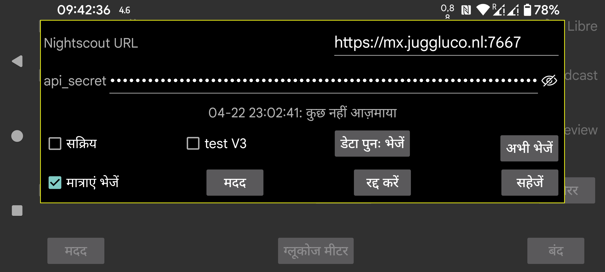

अधिकांश मामलों में आप Juggluco में वेब सर्वर या juggluco-server का उपयोग भी कर सकते हैं। केवल कुछ ऐप्स जो Nightscout वेब पृष्ठ प्रदर्शित करने के अलावा कुछ नहीं करते, उन्हें cgm-remote-monitor की आवश्यकता होती है। आप Juggluco 7.4.1 में वेब सर्वर के साथ AAPS और AAPSClient का भी उपयोग कर सकते हैं।
सभी स्ट्रीम मान आने के क्षण ही Nightscout सर्वर पर अपलोड किए जाते हैं। जब कई सेंसर उपयोग किए जाते हैं, तो सभी सेंसरों के सभी मान अपलोड किए जाते हैं। कुछ Garmin वॉच ऐप/फेस/विजेट मानते हैं कि मान 5 मिनट के अंतराल पर हैं। जब वे एक मिनट के अंतराल पर ग्लूकोज मान प्राप्त करते हैं, तो वे केवल वक्र का अंतिम पांचवां हिस्सा दिखाएंगे। इसी कारण से, Juggluco में शामिल वेब सर्वर मानों को 5 मिनट के अंतराल पर रखता है, सिवाय तब जब "interval=secs" को एक कम मान पर सेट किया जाए।
URL: url https://hostname:port के रूप में होना चाहिए उदाहरण के लिए, https://myname.herokuapp.com:6789
सक्रिय: अपलोडर चालू करें
test V3: Juggluco को Nightscout पर अपलोड करने के लिए api/v3 का उपयोग करने दें। इसका उपयोग उस Nightscout सर्वर पर अपलोड करने के लिए न करें जिसने पहले V1 अपलोड प्राप्त किए थे और उस Nightscout सर्वर को V1 अपलोड न भेजें जिसने पहले V3 अपलोड प्राप्त किए थे। api_secret के स्थान पर आपको उपचार और प्रविष्टियाँ अपलोड करने की अनुमति के साथ एक Access Token निर्दिष्ट करना होगा। आप Nightscout वेब इंटरफ़ेस में Admin Tools के तहत एक बना सकते हैं। (इसे “test” कहा जाता है, क्योंकि कोई अन्य V3 अपलोडर मौजूद नहीं है। सामान्यतः V1 का उपयोग किया जाता है।)
मात्राएं दें: Nightscout पर उपचार के रूप में मात्राएं भी भेजें। चेकबॉक्स को छूने से आप एक डायलॉग पर पहुंचते हैं जिसमें आप प्रत्येक लेबल के लिए यह निर्दिष्ट कर सकते हैं कि Nightscout में इसका क्या अर्थ है। ये विनिर्देश Juggluco में वेब सर्वर के साथ साझा किए जाते हैं (बायां मेन्यू→सेटिंग्स→डेटा आदान-प्रदान→वेब सर्वर)। केवल जब सभी लेबल संभाले जाते हैं, तभी आप “मात्राएं दें” को चेक कर सकते हैं। यदि आप बाद में कोई नया लेबल जोड़ते हैं, तो आपको स्वयं याद रखना होगा कि इसके साथ क्या करना है। Nightscout में एक बग के कारण, पुराने समय अवधियों पर प्रविष्टियाँ या विलोपन केवल तभी दिखाए जाते हैं जब नए समय वाले आइटम जोड़े जाते हैं। इसका मतलब है कि Nightscout को कम बार भेजना बेहतर है। अब यह हर बार तब किया जाता है जब उपयोगकर्ता डिस्प्ले बंद करके या किसी अन्य ऐप पर जाकर Juggluco से दूर हो जाता है।
डेटा पुनः भेजें: Nightscout सर्वर पर सारा डेटा फिर से अपलोड करें
अभी भेजें: सामान्यतः डेटा तुरंत भेजा जाता है जब यह सेंसर या मिरर कनेक्शन से आता है। यदि किसी कारण से पिछला प्रयास विफल हो गया हो तो इस बटन को दबाएं।
WearOS संस्करण Juggluco 4.15.0 और बाद के ग्लूकोज मान भी Nightscout पर अपलोड कर सकते हैं। लगभग सभी मामलों में आप उन्हें फोन या टैबलेट पर Juggluco संस्करण के माध्यम से या कंप्यूटर पर Juggluco सर्वर के माध्यम से भेजना बेहतर है। यह बैटरी की खपत करेगा, खासकर जब यह Nightscout सर्वर से संपर्क नहीं कर पाता, इसलिए जब कोई विश्वसनीय कनेक्शन नहीं है तो बेहतर होगा कि आप सक्रिय बंद रखें।
दो त्रुटि संदेश अक्सर भ्रम पैदा करते हैं।
जब त्रुटि संदेश “upload failure:” के बाद कुछ नहीं आता, तो संभावित कारण हैं:
नेटवर्क कनेक्शन बंद है;
होस्ट नाम गलत लिखा गया है।
upload failure: java.io.FileNotFoundException: NIGHTSCOUTURL/api/v1/entries
यहाँ NIGHTSCOUTURL “Nightscout URL” के बाद दर्ज किए गए सर्वर URL के लिए है।
यह निम्नलिखित में से किसी एक के कारण होता है:
URL गलत साइट की ओर इशारा करता है। उदाहरण के लिए होस्ट नाम के बाद पोर्ट नहीं है और इस वजह से Juggluco एक सामान्य वेब सर्वर से कनेक्ट होता है;
api_secret गलत है;
NIGHTSCOUTURL में एक पथ है जो नहीं होना चाहिए। उदाहरण के लिए Nightscout URL https://ahost.org:8887 है और आपने https://ahost.org:8887/extra दर्ज किया।